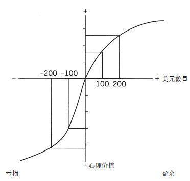

面对财富，你会选择规避风险还是冒险一搏？
在效用理论中，对“盈”的效用评估是通过对两种财富状态的效用进行对比来实现的。例如，如果你有100万美元，额外再得到500美元，这500美元的效用就是100.05万美元的效用和100万美元的效用差。而且如果你拥有数目较大的那笔钱的话，损失500美元的负效用仍然是两种财富状态的效用差。在这种理论下，盈亏的不同效用只是在符号上有所不同（正号或者负号）。没有哪种方式可以表明损失500美元的负效用会大于获得同样数目的钱的效用这一事实，尽管事实确实如此。正如在理论诱导存在盲目性的情况下可能出现的问题一样，我们既不能对盈亏之间可能存在的各种区别进行预测，也无法对其进行研究。盈亏之间的区别被认为是无关紧要的，因此研究这一点也没有意义。
我和阿莫斯没有立即发现我们对财富变化的关注为我们开辟了一条新论题的探索之路。我们主要关注了成功概率不同（或高或低）的风险之间的区别。有一天，阿莫斯随便作了一番假设：“亏损的情况又如何呢？”我们很快就发现，当我们变换焦点时，我们所熟悉的风险规避做法就会被冒险的做法取代。请看下面这两个问题：
问题1：你会选择哪一个？
肯定会得到900美元，还是有90%的可能性会得到1000美元？
问题2：你会选择哪一个？
必定会损失900美元，还是有90%的可能性会损失1000美元？
你很可能会在问题1中选择规避风险，大多数人都会这样。得到900美元的主观价值肯定比有90%的可能性得到1000美元的价值要大。这个问题中的风险规避情况不会让伯努利感到惊讶。
现在来看你对问题2的选择。如果与其他大多数人一样，你在这个问题中就会选择风险答案。这次选择冒险的理由与在问题1中选择规避风险的理由如出一辙，即损失900美元的（负面）价值比有90%的可能性损失1000美元的（负面）价值要大。必然的损失肯定会令人反感，也会使你愿意冒险一试。我们以后就会发现，对可能性的评估（90%对应100%）会导致问题1中的风险规避和问题2中的选择冒险这两种不同做法。
在没有理想的选择时，人们更愿意碰运气，我们不是最先注意到这一现象的人，但由理论误导的盲目性其实早就是普遍现象了。因为占主导地位的理论并未提供一个看似合理的方法来协调人们对盈亏风险的不同态度，于是人们只能忽略态度并不统一这一事实。相反，我们将各种结果视为盈余或者亏损，于是便格外关注这种差异。对是否愿意冒险的不同态度的观察很快便取得了一项重大进展：我们找到了一个论证伯努利理论主要缺陷的方法。请看：
问题3：不管你有多少钱，有人额外又给了你1000美元。现在请从下列两个选项中作出选择：是选有50%的概率赢得1000美元，还是选择肯定会得到500美元？
问题4：不管你有多少钱，有人额外又给了你2000美元。现在请从下列两个选项中作出选择：
是选有50%的概率失去1000美元，还是选择肯定会失去500美元？
你很容易就能确定，就财富的最终状态（伯努利理论中最重要的因素）而言，问题3和问题4并没有什么不同。在两种情况下，你都得就相同的两个选项作出选择：你可以选择得到1500美元，这样你肯定会比现在更有钱；或者你可以冒一次险，这样你得到1 000美元或2 000美元的机会是相同的。因此在伯努利理论中，这两个问题应该引出相似的选择。凭直觉你就可以猜出其他人会作何选择。
。在第一个选择中，大多数调查对象都选择确定的选项。。在第二个选择中，大多数调查对象则更倾向于那个冒险选项。
问题3和4的选择有所不同，这一发现是伯努利理论核心观点的绝对反例。如果财富效用至关重要，那么对相同问题的等义陈述就应产生同样的选择。对这几个问题的对比凸显了对选择进行评估时所选的参照点有着十分重要的作用。问题3中的参照点比当前财富多出1000美元，而问题4中则多出了2000美元。所得增至1500美元在问题3中是赢利500美元，在问题4中却是亏损500美元。显然，相同类型的其他例子也很容易发生，安东尼和贝蒂的故事便与此类似。
在选择之前，你对得到1000美元或2000美元这样馈赠的关注程度如何呢？如果你和大多数人一样，那么你几乎都注意不到这一点。的确，你没理由去注意这一点，因为这笔馈赠包含在参照点中，而参照点通常会被忽略掉。你对自己的选择有所了解，而效用理论却并不了解这些—如果你的净资产高至几千美元或低至几千美元（除非你很穷），你对风险的态度就会不同。你还知道自己对盈亏的态度并非源自对所拥有财富的自我评估。你想得到100美元而不想失去100美元，其原因并非因为这些钱使你的财富状态有了变化。你只是喜欢得到，不喜欢失去—几乎可以肯定地说，你对失去的厌恶程度远大于你对得到的喜欢程度。
这4个问题凸显了伯努利理论的弱点。他的理论太过简单，缺少令人信服的因素。这个缺失的变量就是参照点，它是得失评估所依据的初始状态。在伯努利理论中，你只需要了解财富的状态就可以决定其效用，但在前景理论中，你还需要知道参考状态，因此前景理论比效用理论更复杂。在科学中，复杂性被视为一种成本，要想厘清其中原理，就必须有一套足够丰富、新颖且（最好是）有趣的预测来解释已有的理论往往解释不了的事实。这曾是我们过去必须要面对的挑战。
尽管我和阿莫斯那时并没有研究大脑的双系统模式，但现在我们已经明确地知道，前景理论的核心内容有三个认知特征，这三个特征在金融状况评估工作中扮演着非常重要的角色，在感知、判断和情感等许多自动过程中也很常见，它们应该被看做是系统1的运行特征。
·评估与一个中性参照点相关，这个参照点有时也被视为“适应水平”。你可以很轻松地对这一原则作出令人信服的论证。在你面前放上3碗水，左边的碗中放冰水，右边的碗中放温水，中间碗中的水温则与室温相同。把你的双手分别浸在冰水和温水中约一分钟，然后再浸到中间的碗中。虽然一手凉一手热，但两只手对中间碗中水的温度的感觉是一样的。对金融状况而言，最常见的参照点就是现状，但也可能是你期待的那个结果，或者是你感觉实至名归的结果，比方说，你的同事获得晋升或者得到奖金。高于参照点的结果就是所得，低于参照点的结果就是损失。
·一种降低敏感度的原则在感觉维度和财富变化评估活动中都是适用的。在漆黑的房间里，即使灯光再微弱，效果也会很明显。而同等亮度的灯在非常明亮的房间里也许都令人难以察觉到。同样，900美元和1000美元之间的主观差别也比100美元和200美元之间的差别小得多。
·第三个原则是损失厌恶。当我们对盈亏进行直接比较或权衡时，亏似乎比盈影响更大。积极和消极的期盼或体验之间的力量不对称状况由来已久，将各种威胁当成“危”而不是“机”的有机体的存活和繁殖的概率更大。
图10阐释了掌控结果价值的三项原则。如果前景理论有一面旗帜的话，上面画的肯定是图10.这幅图表明了盈与亏的心理学价值，而盈与亏正是前景理论中的价值“载体”（这一点与伯努利理论不同，在伯努利理论中，财富状态才是价值载体）。这个图有明显不同的两个部分，中性参照点的右边和左边。这个图的明显特征就是它是S形的，这表明人们对盈与亏的敏感度都降低了。最后，图中S形的两条曲线并不对称。在参照点处函数的斜率突然发生改变，即对亏损的反应比对同等数量盈余的反应要强烈得多。这就是所谓的损失厌恶。

图10